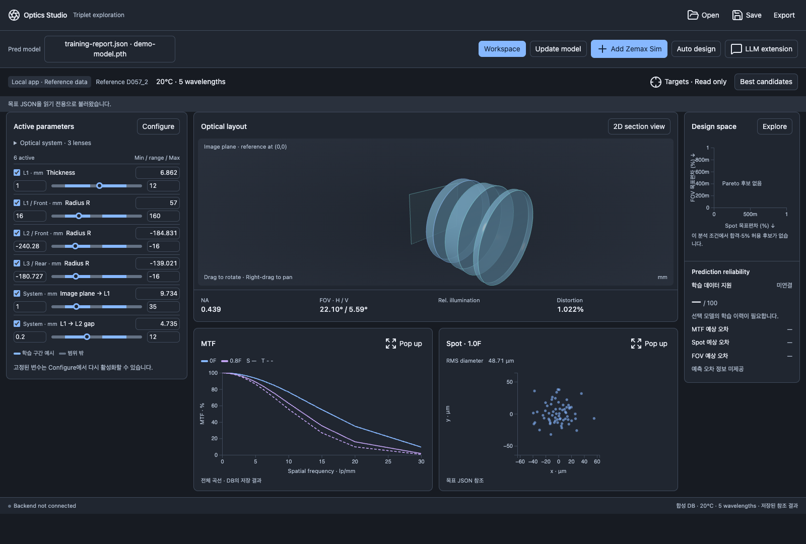
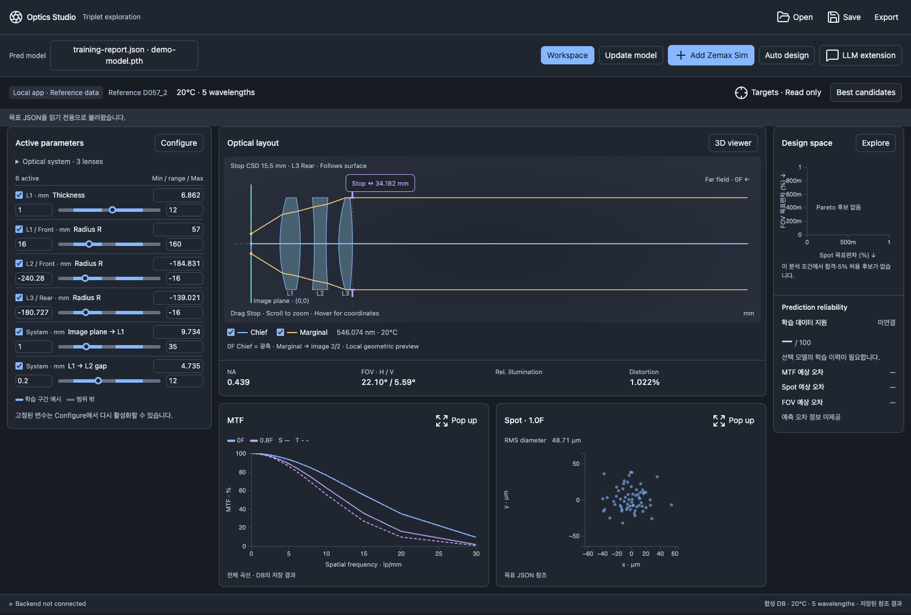
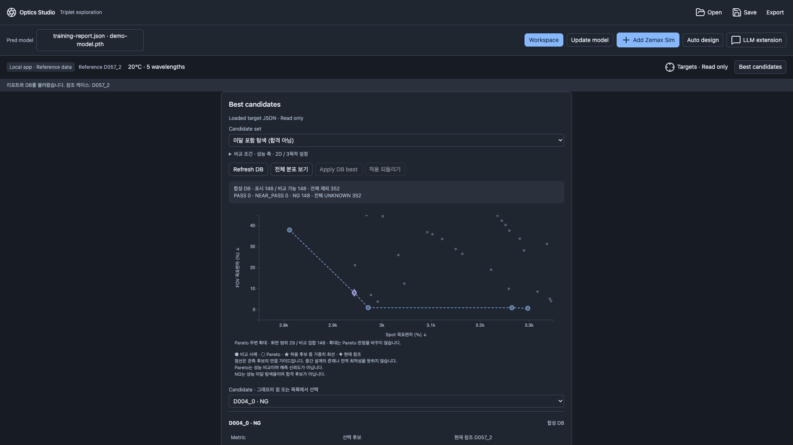
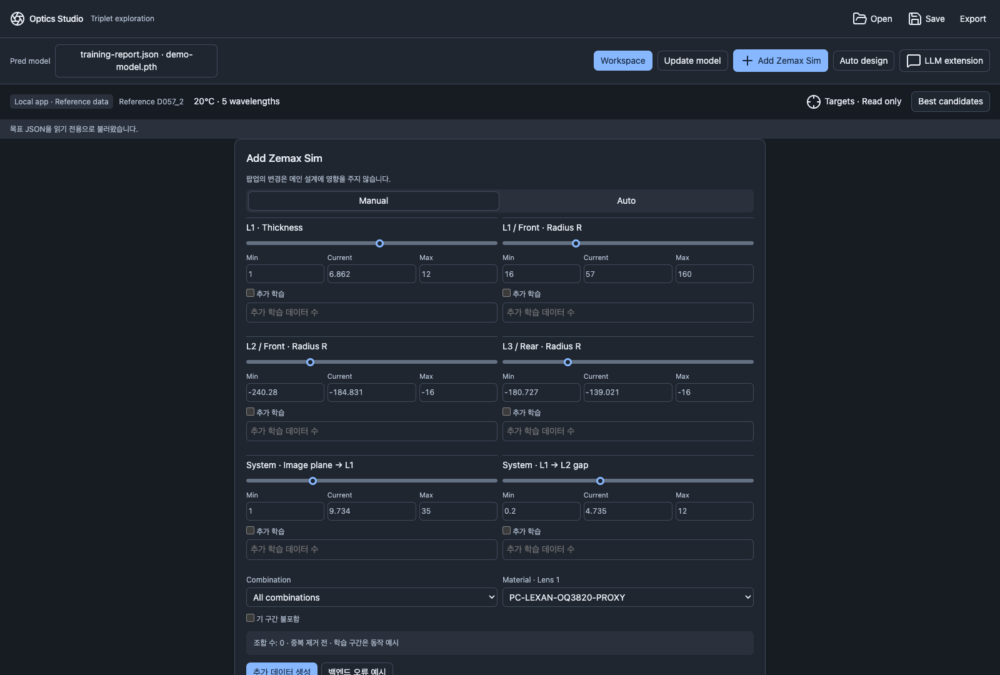
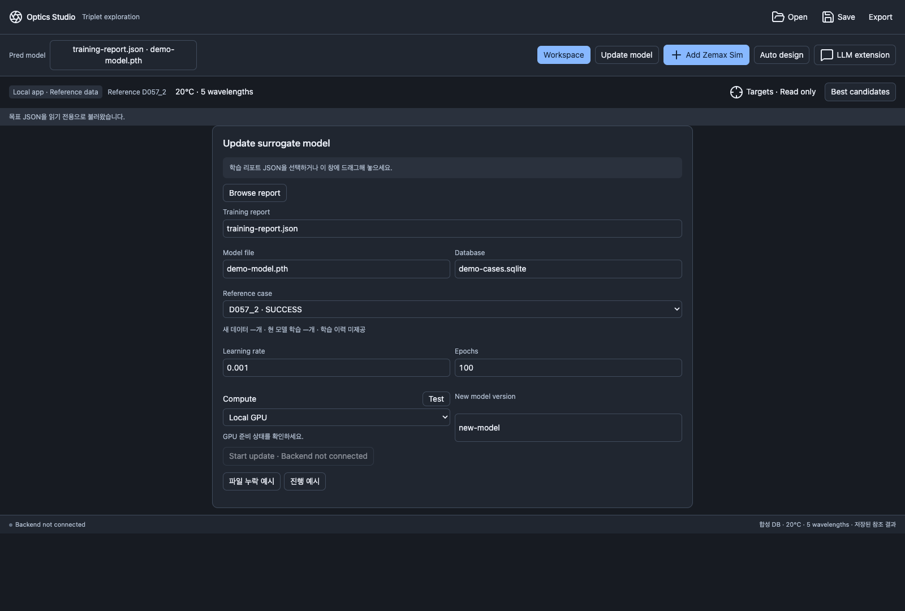

다운로드와 압축 해제
저장소의 Releases에서 피드백 ZIP을 내려받고, 쓰기 가능한 폴더에 모두 압축 해제합니다.
광학계의 수치를 조절하고, 저장된 결과와 설계 후보를 살펴보세요. 이번 버전에서는 화면 구성과 사용 흐름에 대한 의견을 받습니다.
파라미터를 바꾸면 렌즈 형상과 로컬 2D 광선 표시가 바뀝니다. MTF·Spot·NA·FOV를 새로 예측하는 기능은 TBU입니다.
저장소의 Releases에서 피드백 ZIP을 내려받고, 쓰기 가능한 폴더에 모두 압축 해제합니다.
Windows 11 · Python 3.12 64비트 환경에서 폴더를 열고 터미널에 입력합니다.
py -3.12 -m pip install -r requirements.txtrun_windows.cmd를 더블클릭합니다. 가이드는 guide/dist/index.html을 열면 오프라인에서도 볼 수 있습니다.
같은 Python으로 설치하고 실행하세요. py -3.12 launch.py --check로 환경을 확인한 뒤 py -3.12 launch.py를 실행합니다. 오류가 남으면 메시지와 재현 순서를 피드백에 첨부해주세요.
Python·Qt 실행 환경은 ZIP에 포함되어 있지 않습니다. 사용자가 설치한 환경을 사용하며 별도 가상환경을 자동 생성하지 않습니다.
examples/local-demo/training-report.json 선택. 모델·DB·재료 파일은 함께 제공된 상대 위치를 유지합니다. .pth를 직접 여는 방식이 아닙니다.
examples/local-demo/target.json 선택. 목표값은 화면에서 읽기만 합니다.
참조 케이스와 분석 조건을 확인한 뒤 편집을 시작합니다. 상단 Open은 모델 리포트가 아닌 저장한 작업 세션을 여는 버튼입니다.
함께 제공된 DB는 수학적 합성 데이터입니다. 모델 파일은 파일 연결 확인용 더미이며 학습된 모델이 아닙니다.
왼쪽에서 활성 변수를 조절하고, 오른쪽에서 렌즈 형상과 저장 결과를 확인합니다.

실제 앱과 합성 데모 데이터. 이미지를 누르면 원본 크기로 열립니다.
학습 리포트와 연결 파일을 선택합니다.
Configure에서 편집할 변수를 골라 슬라이더와 숫자로 조절합니다.
3D 형상과 2D 단면을 전환합니다.
저장된 결과를 확대하고 DB 후보를 비교합니다.
System / Lens 1 / Lens 2 / Lens 3 탭에서 편집할 항목을 켭니다. 활성 변수는 렌즈 구분 없이 왼쪽 작업대에 모입니다.
막대의 점을 움직이거나 현재값을 직접 입력합니다. Min / Max를 바꾸면 막대가 다시 그려지고, 현재값이 범위 밖이면 가까운 경계로 조정됩니다.
변경한 렌즈의 두께·곡률·간격을 확인합니다. 재질과 Surface type은 Configure에서 고릅니다. 같은 렌즈의 앞·뒤 면에는 같은 표면 종류가 적용됩니다.
| 대상 | 조절 항목 |
|---|---|
| System | Image plane → L1, L1 → L2 gap, L2 → L3 gap |
| 각 렌즈 | Material, Standard / Even Asphere, Thickness |
| 앞·뒤 면 | Radius R, Conic k, Clear semi-diameter, A4·A6·A8·A10 |
| 현재 제한 | 렌즈 3개 고정. A12는 공란 TBU |
체크를 끄면 현재값을 유지한 채 작업대에서 숨깁니다. 다시 켜면 그 값부터 조절합니다. 별도 사용자 기본값을 지정하는 UI는 TBU입니다.
파랑·회색 구간이 다른 파라미터에 따라 바뀌는 표현을 확인할 수 있습니다. 실제 모델의 학습 지원 범위나 예측 신뢰도를 계산한 결과는 아닙니다. 해당 연결은 TBU입니다.

이미지를 누르면 원본 크기로 열립니다. 캡처는 Mac 개발 환경의 실제 앱이며 Windows 창 테두리와는 다릅니다.
왼쪽 드래그로 회전, 오른쪽 드래그로 이동, 휠로 확대·축소합니다. 오른쪽 위 2D section view를 누르면 단면으로 전환합니다.
이미지면 (0, 0) 기준 마우스 좌표를 확인하고 휠로 확대합니다. 3D viewer 버튼으로 돌아옵니다.
보라색 Stop 선이나 Stop ↔ 손잡이를 좌우로 드래그합니다. 손잡이에 포커스한 뒤 화살표 키는 0.1 mm, Shift+화살표는 1 mm 이동합니다. 기본 Stop은 L3 Rear(6번 면)를 따르고, 직접 이동하면 이미지면 기준 절대 위치를 유지합니다.
파란 Chief 1개와 황색 Marginal 2개는 각각 켜고 끌 수 있습니다. 현재 0F 축상 평행광이 L3 → L2 → L1을 통과하므로 Chief가 광축과 겹치는 것은 정상입니다. 광선이 차단되거나 Stop 경계를 찾지 못하면 상태 메시지를 확인합니다.
이 표시는 카탈로그 굴절률을 사용하는 로컬 기하 미리보기입니다. Zemax 해석이나 새 MTF 예측은 실행하지 않습니다. Off-axis 선택·3D 광선은 TBU입니다.
상단의 Reference ID와 분석 조건을 먼저 확인하세요. 결과는 선택한 DB 케이스에 저장된 값입니다.
0F / 0.8F 곡선과 S(실선) / T(점선)를 표시합니다. Pop up에서 확대하고 휠·드래그·Zoom in/out·Reset으로 살펴봅니다. 마우스를 올려 주파수와 값을 읽습니다.
1.0F는 정규화 시야의 가장자리입니다. 숫자는 RMS 직경(μm)이고 focus 1.0이라는 뜻이 아닙니다. Pop up에서 확대·이동하며 좌표를 확인합니다.
저장된 스칼라 값입니다. FOV · H / V는 수평·수직 전체 각도입니다. 파라미터 편집에 따른 새 계산은 아직 연결되지 않았습니다.
현재 데이터가 제공되지 않아 공란입니다. 0%로 해석하지 마세요.
DB·분석에 명시된 조건을 우선합니다. 조건 버튼을 누르면 다중 파장 정보도 확인할 수 있습니다. 미지정 항목에만 25°C / 560 nm를 표시용으로 사용하며, 그 조건으로 결과를 다시 계산하지는 않습니다.
목표 JSON의 값과 가중치를 확인하는 화면입니다. UI에서 목표를 수정하지 않습니다. 데모는 MTF : Spot : FOV = 1 : 1 : 1이며, 네 MTF 조건이 한 범주를 이룹니다.
| 데모 목표 | 본래 목표 | 후보 허용 범위 |
|---|---|---|
| MTF · 6 lp/mm · 0F S/T | 각각 ≥40% | 각각 ≥38% |
| MTF · 6 lp/mm · 0.8F S/T | 각각 ≥30% | 각각 ≥28.5% |
| Spot · 1.0F RMS 직경 | 1.6 μm에 가까움 | 1.52–1.68 μm |
| 수평 FOV · 전체 | 24°에 가까움 | 22.8–25.2° |
허용 범위는 목표 대비 상대 5%입니다. 높은 MTF가 필수 Spot / FOV 미달을 상쇄하여 후보를 합격시키지는 않습니다.
다른 사례보다 모든 성능에서 뒤처지지 않는 후보들을 Pareto로 강조합니다. 예측 신뢰도를 나타내는 선은 아닙니다.
나머지 352건은 결측·비호환 등으로 제외됩니다. 비교 가능한 148건도 현재 목표에서는 모두 NG이므로 기본 화면의 허용 후보 없음은 정상입니다.
데모를 살펴보려면 Candidate set을 미달 포함 탐색 (합격 아님)으로 바꿉니다.
비교 조건 · 성능 축 · 2D / 3목적 설정을 펼칩니다. 서로 다른 분석 조건이나 합성·실측 출처는 한 전선에 섞지 않습니다.
점이나 Candidate 목록을 선택하면 원값·목표·조건·현재 참조와의 차이를 봅니다. 선택 후보 적용 또는 미달 참조 설계로 적용으로 처방을 불러옵니다.
적용 직전 수동 편집 상태로 한 단계 돌아갑니다. 이후 설계를 다시 편집하거나 참조가 바뀌면 이전 되돌리기는 비활성화됩니다.

실제 합성 DB의 NG 탐색 화면. Pareto 주변 확대 상태이며 합격 best 별표는 없습니다.
선택한 두 축에서 비지배인 점을 강조합니다. 점선은 켜거나 끌 수 있는 안내선입니다. 선 위의 중간 설계가 실제로 검증되었다는 뜻은 아닙니다.
MTF·Spot·FOV 세 성능에서 비지배인 후보를 두 축에 표시합니다. 이 모드에서는 연결선을 그리지 않습니다.
기본 Spot/FOV 축은 목표 대비 편차(%)이며 작을수록 좋습니다. Spot을 무조건 줄이거나 FOV를 무조건 키우는 방향이 아닙니다. MTF 축은 네 조건 중 가장 낮은 목표 충족률(%)이며 클수록 좋습니다.
● 비교 사례 · ◯ Pareto · ★ 허용 후보의 가중치 최선 · ◆ 현재 참조. 다이아몬드는 편집값에 대한 새 예측이 아닙니다.
PASS 원래 필수조건 충족 / NEAR_PASS 상대 5% 이내 / NG 허용 범위 밖 / UNKNOWN 정보 부족. 별도 정식 오차가 없는 close-to 목표의 PASS는 수치 오차 수준의 목표 일치입니다.
Apply DB best는 허용 후보가 있을 때만 작동합니다. 가중 점수는 낮을수록 좋고 음수일 수 있으며, 성공 확률이 아닙니다. Pareto 주변 확대는 화면 범위만 바꾸고 전체 비교 집합의 판정은 유지합니다.
현재 DB의 관측 사례 안에서 비교합니다. 전체 설계 공간의 전역 최적성을 보장하지 않습니다. 모델 예측 후보와 신뢰도 연결은 TBU입니다.
렌즈·활성 변수·범위·뷰·Stop·참조 파일·학습/자동화 설정·LLM 초안·Pareto 보기를 세션 JSON에 저장합니다.
앱의 Save로 만든 파일을 엽니다. 이전 화면과 설정을 복원하지만 백엔드 작업을 시작하지 않습니다.
세션·리포트·모델·DB·참조 파일을 ZIP으로 묶습니다. 상대방은 ZIP을 푼 후 세션을 엽니다. 본인의 연결 데이터도 포함되므로 공유할 내용을 확인하세요.
이 화면에서 바꾼 값은 메인 설계에 영향을 주지 않으며, 임시 추가 요청 초안은 세션 복원 대상이 아닙니다.
리포트가 가리키는 모델·DB 이름과 파일 위치를 확인하세요. 데모는 전체 폴더를 다시 압축 해제하면 원래 구성이 복원됩니다. training-report.json을 다시 선택해 연결합니다. Open으로 리포트를 여는 것과 Save한 세션을 여는 것은 서로 다릅니다.
아래 화면은 미래 작업 흐름을 검토하기 위한 것입니다. 버튼의 예시 진행률이나 요청 JSON은 실제 시뮬레이션·학습 결과가 아닙니다.
메인 작업대의 활성 변수와 Min / Max / Current를 복사합니다. Manual에서 ‘추가 학습’을 켜고 데이터 수를 입력합니다. 1개는 중간점, 2개 이상은 양 끝 포함 등간격이며 0은 오류입니다.
All combinations와 One parameter at a time을 선택하고 예상 조합 수를 확인합니다. ‘기 구간 불포함’은 새 범위가 기존 표시 구간의 양쪽으로 모두 더 넓을 때만 적용하며, 빠진 점을 다시 채우지 않습니다. 현재 학습 구간은 UI 예시입니다.
Auto에서는 Additional cases와 Algorithm을 고릅니다. 추가 데이터 생성은 요청값 미리보기를 만들며, 실제 DB에 데이터를 추가하지 않습니다. ‘백엔드 오류 예시’로 오류 표현을 확인할 수 있습니다.

Learning rate, Epochs, Local / Server GPU, New model version을 설정합니다. 학습 이력이 제공된 리포트에서는 DB와 학습 목록을 비교합니다. 데모에는 학습 이력이 없어 학습 수·새 데이터 수가 ‘—’인 것이 정상입니다.
Compute → Test는 로컬 CUDA 드라이버와 GPU 인식만 확인합니다. GPU가 없어도 기본 UI를 사용할 수 있습니다. 서버 연결은 미설정입니다. ‘진행 예시’의 64%는 실제 학습 진행률이 아닙니다. Start update, 새 모델 생성·자동 교체는 TBU입니다.

기본 제한은 24시간, 최대 1,000회, 100회 동안 best 개선 0.5% 미만이면 중단입니다. 설정은 저장할 수 있고 Start / Stop은 비활성입니다. 실제 반복·데이터 확보·작업 로그는 아직 연결되지 않았습니다.
원하는 작업을 자연어 초안으로 적고 세션에 저장할 수 있습니다. Send to Claude는 비활성이고 요청을 전송하지 않습니다. 향후 기존 Python 작업을 조합하여 설계하는 연결을 제공합니다.
| 상태 | 기능 |
|---|---|
| 작동 | 리포트/DB/목표 읽기, 파라미터 편집, 3D/2D, Stop·0F 로컬 광선, 저장 결과 확대, DB Pareto, 후보 적용·되돌리기, Save/Open/Export, 로컬 Compute Test |
| 예시·설정 | 학습 구간 색, 추가 시뮬레이션 요청 JSON, 학습 진행·오류 예시, 학습/자동화 설정, LLM 초안 |
| TBU | 실시간 surrogate 예측, 수치 신뢰도, 모델 예측 Pareto, Zemax 실행·진행률, 모델 학습·교체, 자동 반복·Stop 실행·로그, Claude 연결, A12·Relative illumination, 별도 기본값 UI, 여러 렌즈 템플릿, Windows 11 실기기·DPI 검증 |
광학 성능의 정확도보다 용어·배치·조작·실수 방지·빠진 작업에 초점을 맞춰주세요. 기능이 TBU인 점 자체와 화면을 사용하기 어려운 점은 구분해서 남겨주시면 도움이 됩니다.
GitHub Issues 작성에는 GitHub 로그인이 필요합니다. 직접 작성하기 어렵다면 아래 양식을 복사해 프로젝트 담당자에게 전달하세요. 이 가이드에는 자동 전송 기능이 없습니다.
버전: 0.1.0-feedback.1 사용한 화면 / 버튼: 수행한 순서: 기대한 동작: 실제 결과 / 어려웠던 점: 제안: Windows / Python 버전: 해상도 / 화면 배율: 오류 메시지 / 화면 캡처: